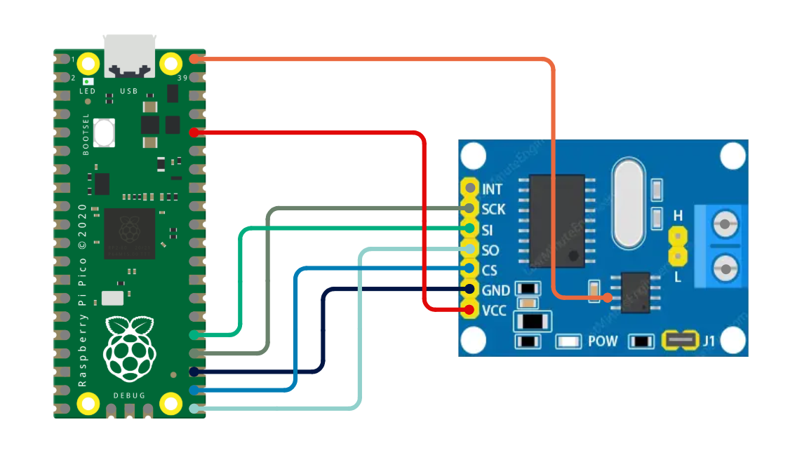
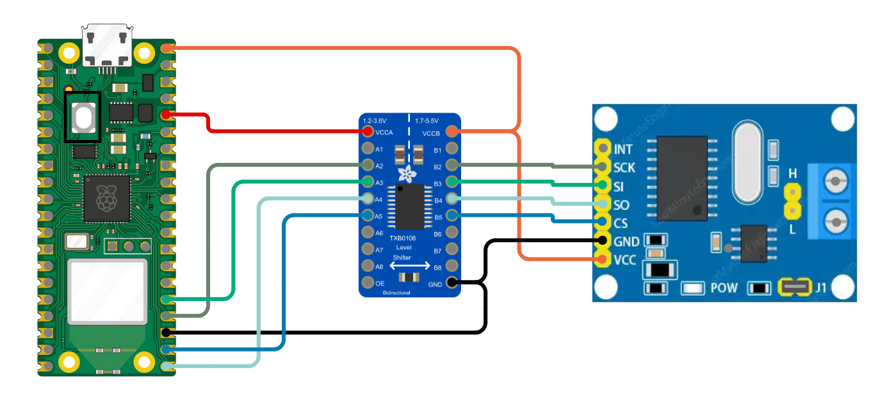
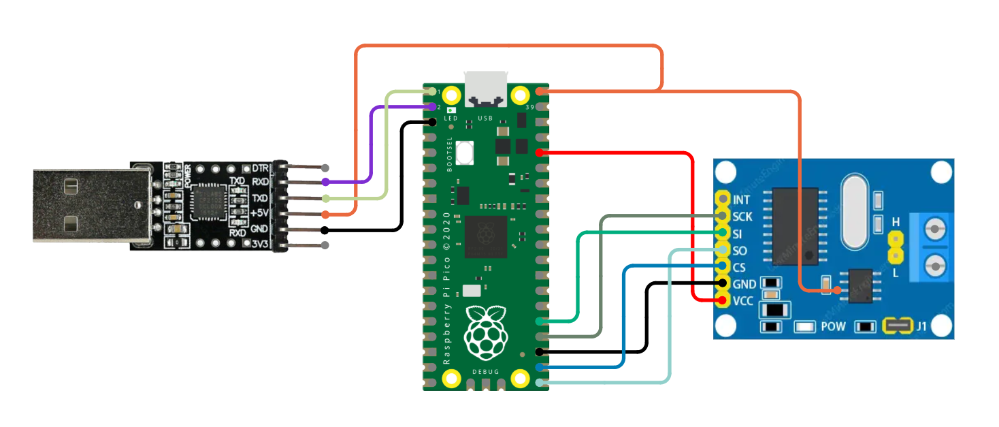
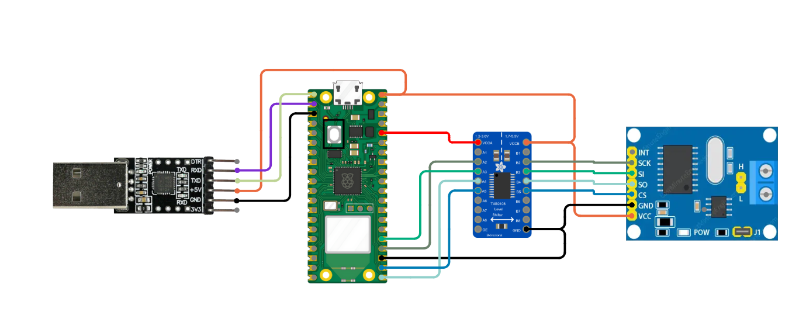

Features
Doggie supports the following features:
To enable BLE and select UART or USB we use features:
ble: Enable Bluetooth Low Energy.uart: Use UART as serial interface.usb: Use USB as serial interface.
Note: one, and only one, serial interface feature (uart or usb) must be selected
By default USB and BLE are enabled.
Fore example:
# USB and BLE enabled:
DEFMT_LOG=off cargo run --release --bin doggie
# UART and BLE enabled:
DEFMT_LOG=off cargo run --release --bin doggie --no-default-features --features=uart,ble
Supported Configurations
The Raspberry Pico implementation supports the following configurations.
As the RP2040 doesn't have 5v tolerant GPIOs, you shoud modify the MCP2515 or use a logic level shifter in order to make it compatible. Read MCP2515 module compatibility note for more information.
-
USB and MCP2515 (SPI to CAN)
- The USB port of the Pico is used for communication with the host system.
- The MCP2515 (SPI to CAN) module is used for CAN Bus communication.
- This configuration allows the device to interface with a CAN network while communicating with the host via USB.
Connections (MCP2515 mod):
Function Pico MCP2515 Vcc 3.3 VCC Vcc 5v VBUS Tranceiver VCC GND GND GND MOSI GP19 SI MISO GP16 SO Clock GP18 SCK CS GP17 CS 
Connections (MCP2515 with level shifter):
Function Pico Level Shifter MCP2515 Vcc VBUS VCC GND GND GND MOSI GP19 <-----------> SI MISO GP16 <-----------> SO Clock GP18 <-----------> SCK CS GP17 <-----------> CS 
-
UART and MCP2515 (SPI to CAN)
- The UART port of the Pico is used to communicate with the host system.
- The MCP2515 (SPI to CAN) module is used for CAN Bus communication.
- This configuration is useful when the USB port is unavailable or when using a serial connection instead of USB.
Connections (MCP2515 mod):
Function Pico MCP2515 USB-UART Vcc 3.3 VCC - Vcc 5v VBUS Tranceiver VCC 5v MOSI GP19 SI - MISO GP16 SO - Clock GP18 SCK - CS GP17 CS - TX GP0 - RX RX GP1 - TX 
Connections (MCP2515 with level shifter):
Function Pico Level Shifter MCP2515 USB-UART Vcc VBUS VCC GND GND GND GND - MOSI GP19 <-----------> SI - MISO GP16 <-----------> SO - Clock GP18 <-----------> SCK - CS GP17 <-----------> CS - TX GP0 - RX RX GP1 - TX 